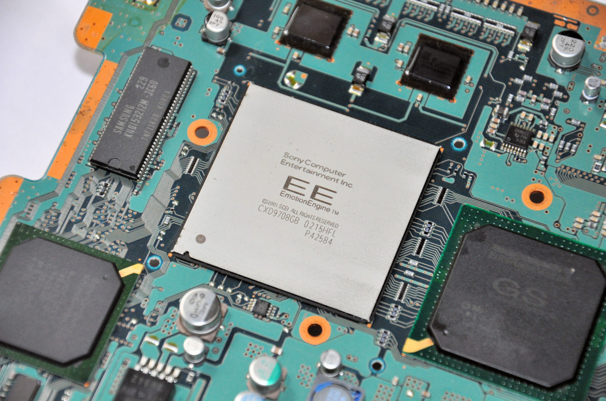
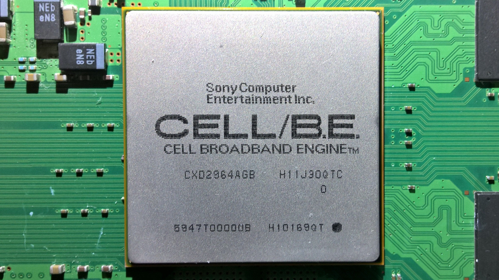
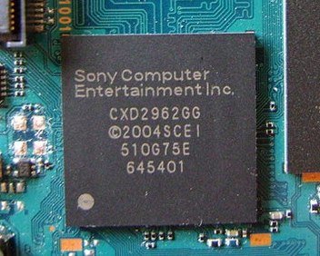
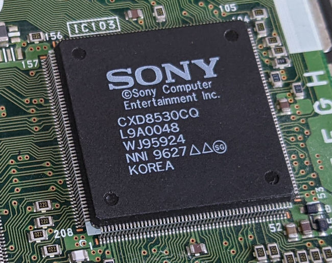
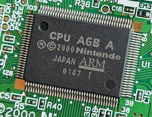
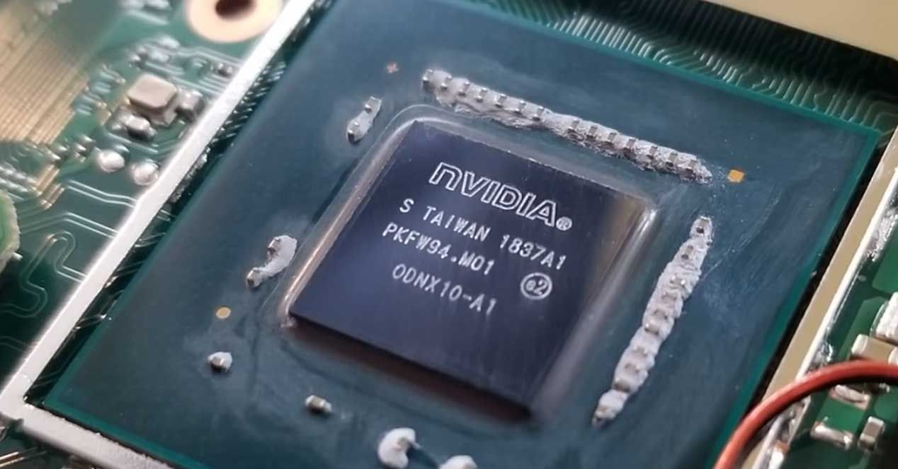

Ever wondered what made these consoles tick? Dive into the custom silicon, unique architectures, and engineering decisions that defined a generation of gaming hardware.

PS2A 128-bit CPU co-developed by Sony and Toshiba running at 294MHz. Its vector units enabled complex physics and geometry that pushed far beyond what PCs could do at the time.

PS3A PowerPC core paired with 8 SPEs. Theoretically supercomputer-class performance, notoriously difficult to program. IBM, Sony and Toshiba spent $400M developing it.

PSPA 32-bit MIPS R4000 running at 333MHz with a dedicated Media Engine for audio/video decoding. Remarkable for delivering near-PS2 quality in a handheld in 2005.

PS1A 32-bit MIPS R3000A running at 33MHz. Simple but revolutionary for its time, enabling the PS1 to render 3D polygons that defined an entire generation of gaming.

GBAA 32-bit ARM processor running at 16MHz. Incredibly power efficient, allowing the Game Boy Advance to run for 15 hours on two AA batteries while pushing impressive 2D graphics.

SwitchA custom Nvidia Tegra X1 SoC with 4 ARM Cortex-A57 cores and 256 Maxwell GPU cores. The same chip that powers the Nintendo Switch and is the target of the famous fusée gelée exploit.